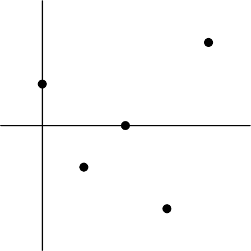
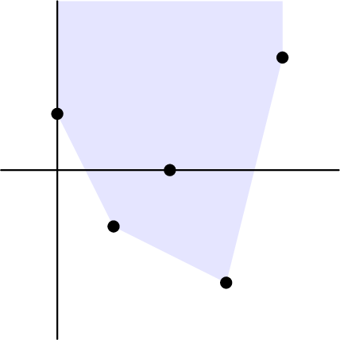

December 12th
$\renewcommand{\AA}{\mathbb A} \newcommand{\RR}{\mathbb R} \newcommand{\ZZ}{\mathbb Z} \newcommand{\NN}{\mathbb N} \newcommand{\QQ}{\mathbb Q} \newcommand{\CC}{\mathbb C} \newcommand{\FF}{\mathbb F} \newcommand{\PP}{\mathbb P} \newcommand{\e}{\varepsilon} \newcommand{\ball}[2]{(#1-#2,\,#1+#2)} \newcommand{\floor}[1]{\left\lfloor{#1}\right\rfloor} \newcommand{\ceil}[1]{\left\lceil{#1}\right\rceil} \newcommand{\norm}[1]{\left\lVert{#1}\right\rVert} \newcommand{\diff}{\operatorname{diff }} \newcommand{\disc}{\operatorname{disc }} \newcommand{\ord}{\text{ord}} \newcommand{\lcm}{\text{lcm}} \newcommand{\del}{\partial} \newcommand{\emp}{\varnothing} \newcommand{\divides}{\,|\,} \newcommand{\op}[1]{\operatorname{#1}} \newcommand{\mf}[1]{\mathfrak{#1}} \newcommand{\mc}[1]{\mathcal{#1}} \newcommand{\sgn}{\operatorname{sgn}} \newcommand{\refl}{\op{refl}} \newcommand{\UU}{\mathcal{U}} $Today I learned the definition of a Newton polygon. Equip a field $K$ with a valuation $\nu.$ That is, $\nu:K\to\RR$ by $\nu(x)+\nu(y)\ge\min\{\nu(x),\nu(y)\}.$ Note we can generate this if we have a nonarchimedean valuation: if we have a nonarchimedean valuation $|\cdot|,$ then $\nu(x)=-\log|x|$ should work.
Then for a polynomial $f(x)\in K[x]$ by $f(x)=\sum_ka_kx^k,$ we dot the points $(k,\nu(a_k)).$ For example, here is $f(x)=10+\frac12x+3x^2+\frac14x^3+4x^4$ with $\nu_2.$
Then we define the Newton polygon of $f(x)$ as the convex hull of these points from the bottom. Say, draw the convex hull and then all vertical rays going upward from it. Alternatively, imagine rotating the vertical line $x=0$ counterclockwise around the convex hull until it has rotated a full $180^\circ.$ The area not drawn out by the rotating line is our polygon. Anyways, here's the same example.
The main theorem of Newton polygons says something for $(x_k,y_k)$ and $(x_\ell,y_\ell)$ of the lower convex hull, there are $x_\ell-x_k$ roots of valuation $\nu$ equal to the negative slope $-\frac{y_\ell-y_k}{x_\ell-x_k}.$ I don't know the proof for this.